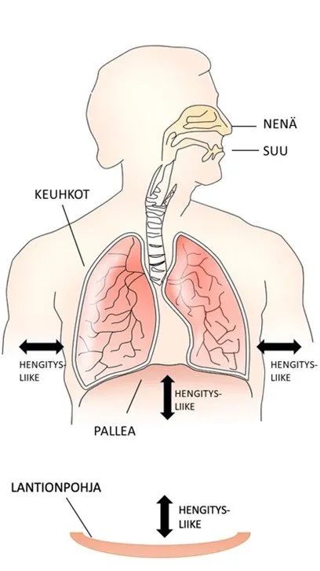
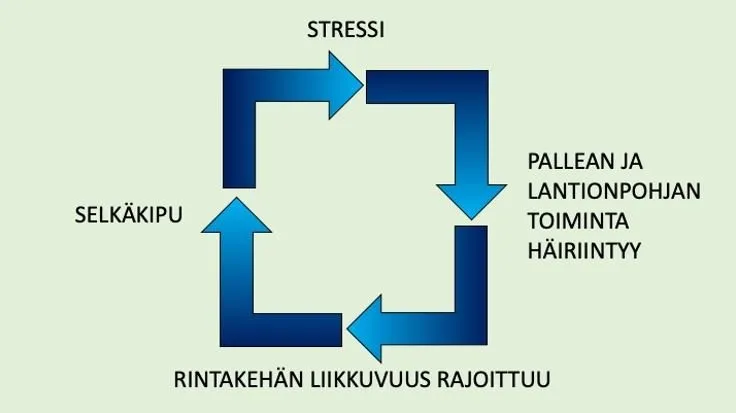

Hengitys vaikuttaa selkäkipuun
Julkaistu alunperin Medisportin blogissa.
Epätasapainoinen hengitys on jopa suurempi altistava tekijä selkäkivulle kuin muut tunnetut riskitekijät, kuten fyysinen passiivisuus tai ylipaino. Erityisesti tärkeimmän hengityslihaksemme, pallean, toimintahäiriö on yhteydessä alaselän ja niska-hartiaseudun kiputiloihin. Stressi, kiire ja ahdistus vaikuttavat hengitykseen ja altistavat selkäkivulle. Hengitysharjoitukset ovat tehokkaita alaselkäkivun hoidossa ja ennaltaehkäisyssä.
Jotta hengityksen yhteyden selkä- ja niska-hartiakipuun ymmärtää, on tarkasteltava hengitystä lihasten näkökulmasta tarkemmin. Tärkein hengityslihaksemme, pallea, toimii myös selkärangan tukilihaksena. Se kiinnittyy muun muassa kylkiluihin ja selkänikamiin. Pallea kiinnittyy kalvorakenteiden avulla lisäksi vatsaontelon seinämiin ja lantionpohjaan. Lantionpohja eli ”alapallea” on lihasten ja sidekudoksen muodostama vahva rakenne lantion alaosassa. Sisäänhengityksessä pallea supistuu ja laskeutuu alaspäin, jolloin keuhkot täyttyvät. Samaan aikaan lantionpohja liikkuu alaspäin. Myös uloimmat lihakset kylkiluiden välissä supistuvat sisäänhengityksen aikana laajentaen rintakehää. Uloshengityksellä pallea ja lantionpohja liikkuvat takaisin ylöspäin. Rauhallisesti hengitettäessä uloshengitys tapahtuu ilman ylimääräistä lihastyötä. Pallea, lantionpohja sekä syvät vatsa- ja selkälihakset tekevät tiivistä yhteistyötä jokaisella hengityksellä.

Pallea, lantionpohja sekä kylkiluut liikkuvat sisään- ja uloshengityksen aikana. Hengitys liikuttaa yli 140 niveltä.
Hengitys on automaattista. Itseasiassa niin automaattista, että sen muutoksia ei havaitse kuin vasta oireiden kautta. Yllättävässä säikähdystilanteessa hengitys pinnallistuu, jopa salpaantuu. Tämän muutoksen huomaat. Siksi kaikkein jäytävintä on pieni, mahdollisesti jopa tiedostamaton stressi, joka vaikuttaa hengitykseen pikkuhiljaa huomaamatta. Hengitys on optimaalisessa tilanteessa tasapainoista, jolloin kehon aineenvaihdunnalliset tarpeet ovat tasapainossa. Tätä tasapainoa voivat horjuttaa ali- ja ylihengittäminen eli hypo- ja hyperventilointi. Hyperventiloinnin yhtenä oireena on lihasten kireys, sillä se lisää lihasjännitystä.
Stressaava elämäntilanne tai kipu vaikuttavat hengitykseen, jolloin pallea jännittyy. Hengitys muuttuu pinnalliseksi hyperventiloinniksi, kun pallea ei rentoudu. Tällöin stressitilaa voimistava hermoston osa aktivoituu, mikä lisää kehon valmiustilaa. Kehossa herää pakene tai taistele -tila. Hengityksen muutoksessa pallean ja lantionpohjan toiminta häiriintyy, mikä altistaa selkä- ja niska-hartiakivulle. Alaselkäkivusta kärsivillä ihmisillä onkin todettu sekä pallean että lantionpohjan toiminnan heikentyneen. Pallean toimintahäiriö ja kehon ylivirittynyt valmiustila pakottavat kaulan alueen apuhengityslihakset töihin, mikä lisää niska-hartiaseudun lihaskireyttä ja kipua. Syntyy noidankehä, jossa stressi rajoittaa pallean ja lantionpohjan liikettä, mikä rajoittaa rintakehän liikkuvuutta, mikä lisää entisestään kehon ylivireyttä ja altistaa selkäkivulle.

Stressi voi aiheuttaa selkäkipuun johtavan noidankehän.
Hengitysharjoitukset ovat tehokkaita alaselkäkivun hoidossa ja ennaltaehkäisyssä. Hengitysharjoitukset lisäävät keskivartalon lihasten aktiivisuutta. Palleahengitys vähentää kivun nostattamia stressihormonimääriä elimistössä, ja moni kokee kivun helpottavan jo ensimmäisellä harjoituskerralla. Palleahengitys aktivoi rentoutumiseen liittyvää parasympaattista hermostoa. Kudosten hapensaanti lisääntyy, kun mikroverenkierto paranee ja pienet verisuonet laajenevat. Palleahengitys parantaa rintakehän ja selän liikkuvuutta ja vapauttaa tilaa nikamaväleihin. Selän kireät lihakset venyvät ja samalla on helpompi asettaa rintakehä pystyasennossa lantion päälle, jolloin ryhti paranee.
Kokeile seuraavia hengitysharjoituksia (palleahengitys). Hengitysharjoituksilla ei ole oikeaa tai väärää tapaa. Varaa harjoituksille aikaa 5 minuuttia tai enemmän. Parhaimman hyödyn harjoituksista saat, kun teet niitä säännöllisesti, mieluiten päivittäin.
Aloita omaan hengitykseen tutustuminen seuraavalla harjoituksella:
- Asetu mukavaan asentoon. Voit esimerkiksi asettua selinmakuulle polvet koukistettuina tai istua selkänojallisella tuolilla. Nojaa selkää selkänojaa vasten. Sulje silmäsi.
- Vapauta jännitystä leuan seudulta avaamalla suutasi muutaman kerran. Jätä lopulta ylä- ja alahampaiden väliin hieman tilaa. Pidä huulet joko hieman raollaan tai kevyesti yhdessä.
- Hengitä nenän kautta sisään ja ulos.
- Havainnoi omaa hengitystäsi. Miten hengitys virtaa sisään ja ulos. Tarkkaile hengitysrytmiä sekä sisään- ja uloshengityksen pituutta. Anna hengityksen kulkea rauhassa, kiirettä ei ole. Sisään- ja uloshengitykset voivat olla yhtä pitkiä tai uloshengitys voi olla hieman sisäänhengitystä pidempi. Anna tilaa uloshengityksen jälkeen pienellä tauolle ennen seuraavaa sisäänhengitystä.
- Siirrä huomiosi vatsan alueelle. Halutessasi siirrä kämmenesi pehmeästi vatsan päälle. Tunnustele hengityksen liikettä vatsan alueella. Anna vatsan pehmeästi liikkua sisään- ja uloshengityksen aikana.
- Tarkkaile seuraavaksi rintakehän seutua. Halutessasi siirrä kämmenesi kylkiluiden päälle. Tarkkaile hengityksen liikettä rintakehässä. Suuntaa sisäänhengitys kylkiluihin kämmenien alle. Tunne, kuinka kylkiluut laajenevat sivuille sisäänhengityksellä.
- Anna vatsan ja rintakehän liikkua vapaasti ja kiireettä hengityksen aikana.
- Lopuksi avaa silmäsi.
Kun oman hengityksen tarkkailu on sinulle tuttua, syvennä hengitystäsi seuraavalla harjoituksella:
- Asetu selinmakuulle mukavalle alustalle. Koukista polvet, pidä jalkapohjat alustalla. Laske käsivarret vartalon viereen alustalle.
- Vapauta jännitystä leuan seudulta avaamalla suutasi muutaman kerran. Jätä lopulta ylä- ja alahampaiden väliin hieman tilaa. Pidä huulet joko hieman raollaan tai kevyesti yhdessä.
- Hengitä nenän kautta sisään ja ulos. Anna tilaa uloshengityksen jälkeen pienellä tauolle ennen seuraavaa sisäänhengitystä.
- Seuraa omaa hengitysrytmiäsi. Sisäänhengityksellä nosta käsivarret ylös kohti kattoa ja pään yli kohti lattiaa. Anna rintakehän nousta vapaasti liikkeen ja sisäänhengityksen aikana. Uloshengityksellä kuljeta käsivarret samaa reittiä takaisin vartalon vierelle. Rentouta käsivarret alustalle uloshengityksen jälkeisen hengitystauon ajaksi.
- Lopuksi jätä käsivarret vartalon viereen ja nauti vapaasta hengityksestä.
Yksi tehokkaimmista tavoista tutustua omaan hengitykseen ja harjoittaa hengitystä ovat pilatesharjoitukset. Pilateksessa hyödynnetään erityisesti selän lihaksia ja rakenteita venyttävää hengitystapaa. Kysy lisää pilateksen pienryhmä- tai yksilötuntimahdollisuudesta.
Joskus hengittäminen voi tuntua vaikealta kiristyneiden apuhengityslihasten takia. Varaa silloin rohkeasti aika hierontaan. Hengityksen vapautuminen saattaa tarvita aluksi manuaalista käsittelyä kireiden apuhengityslihasten rentouttamiseksi.
Lähteet:
Leevilä, K. Manninen, E. Pohjalainen, M. & Saukkola, S. 2015. Hengitysfysioterapian perusteet – itseopiskelumateriaalin tuottaminen fysioterapiaopiskelijoille. Fysioterapian koulutusohjelma. Lahden ammattikorkeakoulu. Opinnäytetyö.
Luomajoki, H. ym. 2020. Ammattilaisen kipukirja. 1. painos. VK-kustannus Oy.
Martin, M. 2016. Hengitys virtaa – kohti kehon ja mielen tasapainoa. 1. painos. Helsinki: Kirjapaja.
Sandström, M. Ahonen, J. 2013. Liikkuva ihminen – aivot, liikuntafysiologia ja sovellettu biomekaniikka. 1. painos. VK-kustannus Oy.
Selkäliitto ry. N.d. Palleahengityksestä on hyötyä selkäkipuun.